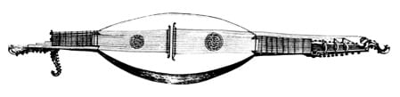
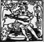

Préface (11-14)
Introduction (17-18)

I PARTIE
LA NOTION DE MESURE DANS LA FABRICATION DES INSTRUMENTS DE MUSIQUE AVANT LE XVIII° SIÈCLE
I-1. Préliminaire
Le rôle des ressources dans la création ( 23-24)
I-2. Concepts rattachés à la notion de mesure
2.1 Unité et Nombre
Quantité continue et discontinue (25-26)
2.2 Qu’est-ce que le rapport par différence et la mesure
d’une grandeur ? (26-27)
2.4 La proportionnalité (28)
Les médiétés (28-29)
La proportion arithmétique (30-30)
La proportion géométrique(30-31)
La proportion harmonique (31-31)
2,5 Les sections proportionnelles (31-33)
2,6 Les propriétés symétriques des sections proportionnelles (34-37)
I-3. La mesure des grandeurs dans les recettes anciennes
3.1 Trois exemples de recettes-(Vitruve-Henri-Arnault de Zwolle-Mathias Roriczer) (38-41)
3.2 Le mythe du nombre d’or (41-41)
3.3 Les tracés géométriques proportionnels
et leurs approximations par les nombres (42-43)
3.4 Approximations et Construction des suites de rapports convergents (43-45)
la suite géométrique
la suite harmonique
la section sous-harmonique
3.5 L’analogie en tant que principe de substitution des mesures (45-47)
I-4. L’analyse des mesures dans un dessin technique du XVe siècle :
4,1 Le luth d’Henri-Arnaut de Zwolle (48-50)
4.2 Le dessin de la forme : premières relations proportionnelles (50-52)
4.3 Comment la proportion engendre les mesures (52-53)
4.4 La position de la rose (54-55)
4.5 La relativité du plan(56)
II° PARTIE
CONCEPTION ET DESSIN DES FORMES DE LA FAMILLE DU VIOLON
II-1. Préliminaire :
Les difficultés de l’analyse des mesures (41)
II-2. Les moules de violon d’Antonio Stradivari
2.1 Approche des relations entre les principales dimensions des formes (62)
2.2 Les relations dans la longueur (65-68)
2.3 Les relations dans la largeur (68-72)
2.4 Les relations dans la hauteur (72-73)
2.5 La longueur du manche, la place du chevalet,
la longueur de corde (73-77)
2.6 Les relations entre les trois dimensions (77-79)
II-3 Les archétypes proportionnels de la famille du violon
3.1 Le carré et la conception organique de la forme (80-81)
3.2 Définition et organisation de la surface (81-83)
3.3 Mesures analogiques et archétype de partition chez Vitruve (84-86)
3.4 Quelques exemples d’ordonnances (86 -100)
II-4 Éléments sur les techniques du tracé au compas
4.1 Le tracé des courbes et section (101 -103)
4.2 Scotie et contre-courbe (104 -103)
-Comment tracer une scotie (104 -105)
-Comment tracer une contre-courbe (105 -106)
4.3 Trois Problèmes et leurs solutions (106 -111)
4.4 Les caractéristiques des courbes du violon (112 -113)
II-5 Sept modèles
5.1 Forme de violon d’après Andrea Amati (114 -129)
5.2 Analyse et commentaire du tracé d’Andrea Amati (130 -128)
5.3 Forme de violon d’après les frères Amati (139 -147)
5.4 Analyse et commentaire du tracé d’Andrea Amati (148 -151)
5.5 Forme d’alto d’après Giacomo Gennaro (152 -161)
5.6 Forme d’alto d’après Andrea Guarneri (162 -171)
5.7 Forme de tenor d’après Andrea Guarneri (172 -181)
5.8 Forme de violoncelle d’après Joseph filius Andrea Guarneri (182 -191)
5.9 Forme de violoncelle d’après Dominico Montagnana (192 -202)

III° PARTIE
PRATIQUES TARDIVES DE LA PROPORTIONNALITÉ (205)
III-1 Préliminaire :
Des bras et des pieds… (207-208)
III-2 Héritages et spécificités de Stradivari
2.1 Production des formes et évolution des pratiques de mesures (209)
2.2 Drôles de têtes… (217)
2.3 Les bases proportionnelles du placement des ouïes chez Stradivari (221)
2.4 Comment tracer les formes de Stradivari : (224)
LE MOULE MS1 « MB » (232)
LE MOULE MS 2 « S » (234)
LE MOULE MS 28 « SL » (236)
LE MOULE MS 21 « PG » (238)
CONCLUSION (245)
GLOSSAIRE (249)
LISTE DES SOUSCRIPTEURS 252)
BIBLIOGRAPHIE SELECTIVE (254)